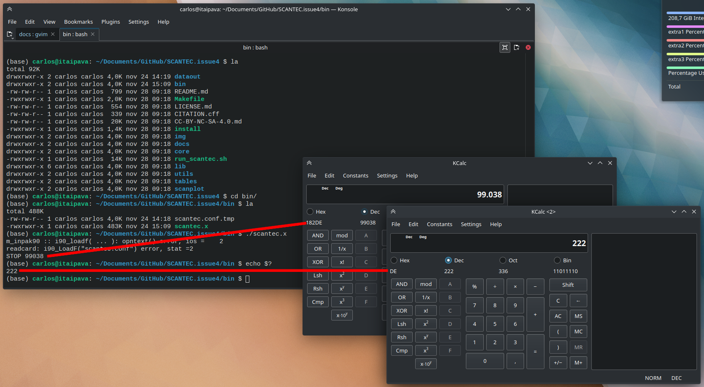

Resolução de Problemas¶
A fim de fornecer aos usuários do SCANTEC meios para realizar a investigação de erros que podem ocorrer durante o uso do sistema, nesta página estão elencadas as rotinas que utilizam a instrução STOP, além de uma tabela com os códigos de erro que o SCANTEC utiliza e os códigos correspondentes obtidos a partir do uso do comando echo $? no Shell Bash do Linux. Estas informações podem ser úteis para se identificar possíveis fontes de problemas. Recomenda-se aos usuários a abertura de issues dentro do projeto SCANTEC para que sejam registrados os problemas que podem ser encontrados. Antes de abrir uma nova issue, verifique antes a existência de outras issues com problema semelhantes.
Lista de Possíveis Erros e Fontes de Investigação¶
As rotinas a seguir fazem uso da instrução STOP. Em geral, os escopos onde esta instrução é utilizada correspondem à verificação da existência de arquivos (e.g., arquivos namelists scantec.conf e scantec.vars), verificação do carregamento de arquivos e testes de alocação de arrays. A forma como o SCANTEC está estruturado, inclui a utilização de subrotinas para realizar a interrupção do programa (vide as subrotinas die0_, die2_ e die4_ na rotina m_inpack.F90), caso algum problema seja encontrado. Porém, atualmente, estas rotinas não são utilizadas em todas as partes do SCANTEC, o que pode tornar o processo de debug um pouco menos objetivo:
scan_coreMOD.f90scan_dataMOD.f90scan_ModelPlugin.f90scan_readModel.f90scantec_module.f90varType.f90MathExpress.f90m_inpak90.F90scan_UtilsMOD.f90
Para contornar esse problema, para cada instrução STOP, foram atribuídos valores decimais que podem ser utilizados para mapear as seções do código onde elas ocorrem.
Tabela de Códigos de Erros do SCANTEC¶
Na tabela a seguir, são relacionados os códigos decimais da instrução STOP das rotinas elecandas na seção anterior e do comando echo $?, com os seus respectivos códigos hexadecimais. Observe que o "lowest byte" do código hexadecimal da instrução STOP é exatamente o código hexadecimal do comando echo $?. Dessa forma pode-se fazer uma correspondência entre os códigos, apesar de haver dependência quanto ao compilador, sistema operacional e processador utilizado. Como referência, os códigos foram gerados utilizando-se o Shell GNU Bash, version 5.2.2(1)-release (x86_64-pc-linux-gnu) do Ubuntu 22.10 (kernel Linux 5.19.0-23-generic), compilador GNU Fortran (Ubuntu 9.5.0-1ubuntu3) 9.5.0 e processador Intel Core i7-4790.
Na imagem a seguir, é apresentado um exemplo de execução do SCANTEC, em que foi gerado o código 99038 a partir de uma instrução STOP (esse código indica que o arquivo scantec.conf não foi encontrado). Imediatamente após a obtenção do código, foi executado o comando echo $?, a partir do qual foi obtido o código 222. Utilizando-se uma calculadora que converte números decimais em hexadecimais, pode-se verificar que o número decimal 99038 corresponde ao número hexadecimal 182DE e que o número decimal 222 corresponde ao número hexadecimal DE (que é o "lowest byte" do número 182DE). Utilizando-se a tabela abaixo, pode-se verificar que a correspondência entre os dois códigos (182DE e DE) indica a "Mensagem ou Motivo: Erro arquivo scantec.conf não encontrado", proveniente da rotina scan_UtilsMOD.f90.

De acordo com o exemplo apresentado, utilize a tabela a seguir para encontrar o código STOP emitido pelo SCANTEC e o seu correspondente código emitido pelo comando echo $?. A correspondência é realizada pelos números hexadecimais referentes aos códigos (representados pelos números decimais).
Código STOP (decimal) |
Código STOP (hexadecimal) |
Código echo $? (decimal) |
Código echo $? (hexadecimal) |
Mensagem ou Motivo | Função/Subrotina/Rotina |
|---|---|---|---|---|---|
| 99000 | 182B8 | 184 | B8 | Erro 'ERROR: Analisys Time Step should be less or equal to Forecast Time Step' |
rotina scan_coreMOD.f90 |
| 99001 | 182B9 | 185 | B9 | Erro carregamento scanVarsConf |
subrotina data_config em scan_dataMOD.f90 |
| 99002 | 182BA | 186 | BA | Arquivo scantec.table não encontrado |
rotina scan_ModelPlugin.f90 |
| 99003 | 182BB | 187 | BB | Arquivo de definição do modelo não encontrado | rotina scan_ModelPlugin.f90 |
| 99004 | 182BC | 188 | BC | Erro leitura label (i90_label, GDef%DName) |
rotina scan_ModelPlugin.f90 |
| 99005 | 182BD | 189 | BD | Erro leitura gint (i90_gint, GDef%num) |
rotina scan_ModelPlugin.f90 |
| 99006 | 182BE | 190 | BE | Erro leitura mapping (i90_gtoken, gdef%mapping) |
rotina scan_ModelPlugin.f90 |
| 99007 | 182BF | 191 | BF | Erro leitura start_coord (i90_gfloat, gdef%start_coord) |
rotina scan_ModelPlugin.f90 |
| 99008 | 182C0 | 192 | C0 | Erro leitura incr_coord (i90_gfloat, gdef%incr_coord) |
rotina scan_ModelPlugin.f90 |
| 99009 | 182C1 | 193 | C1 | Erro alocação array GDef%coord(GDef%num) |
rotina scan_ModelPlugin.f90 |
| 99010 | 182C2 | 194 | C2 | Erro subrotina GetLinCoords |
rotina scan_ModelPlugin.f90 |
| 99011 | 182C3 | 195 | C3 | Erro alocação array GDef%coord(GDef%num) |
rotina scan_ModelPlugin.f90 |
| 99012 | 182C4 | 196 | C4 | Erro subrotina GetLevelsCoord |
rotina scan_ModelPlugin.f90 |
| 99013 | 182C5 | 197 | C5 | Arquivo de definição do modelo não encontrado | rotina scan_readModel.f90 |
| 99014 | 182C6 | 198 | C6 | Erro carregamento do arquivo de definição do modelo (i90_LoadF) |
rotina scan_readModel.f90 |
| 99015 | 182C7 | 199 | C7 | Erro leitura label (i90_label) |
subrotina GetDef em scan_readModel.f90 |
| 99016 | 182C8 | 200 | C8 | Erro leitura num (GDef%num) |
subrotina GetDef em scan_readModel.f90 |
| 99017 | 182C9 | 201 | C9 | Erro leitura mapping i90_GToken(GDef%mapping,ierr) |
subrotina GetDef em scan_readModel.f90 |
| 99018 | 182CA | 202 | CA | Erro leitura start_coord (Gdef%start_coord) |
subrotina GetDef em scan_readModel.f90 |
| 99019 | 182CB | 203 | CB | Erro leitura incr_coord (Gdef%incr_coord) |
subrotina GetDef em scan_readModel.f90 |
| 99020 | 182CC | 204 | CC | Erro alocação array GDef%coord(GDef%num) |
subrotina GetDef em scan_readModel.f90 |
| 99021 | 182CD | 205 | CD | Erro chamada GetLinCoords |
subrotina GetDef em scan_readModel.f90 |
| 99022 | 182CE | 206 | CE | Erro alocação array GDef%coord(GDef%num) |
subrotina GetDef em scan_readModel.f90 |
| 99023 | 182CF | 207 | CF | Erro chamada GetLevelsCoord |
subrotina GetDef em scan_readModel.f90 |
| 99024 | 182D0 | 208 | D0 | Erro 'Model Name or Model Type not found!' |
função getModel_ em scantec_module.f90 |
| 99025 | 182D1 | 209 | D1 | Erro 'unknow Experient Name' |
função getField_ em scantec_module.f90 |
| 99026 | 182D2 | 2010 | D2 | Erro 'unknow Experiment Name', |
função getBitMap_ em scantec_module.f90 |
| 99027 | 182D3 | 211 | D3 | Erro 'Dimension not found in' .model |
função getDimVec_ em scantec_module.f90 |
| 99028 | 182D4 | 212 | D4 | Erro 'ERROR: wrong type, should be ofscalartype ' |
subrotina get0d em varType.f90 |
| 99029 | 182D5 | 213 | D5 | Erro 'ERROR: wrong type, should be ofarray1Dtype ' |
subrotina get1d em varType.f90 |
| 99030 | 182D6 | 214 | D6 | Erro 'ERROR: wrong type, should be ofarray1Dtype ' |
subrotina get2d em varType.f90 |
| 99031 | 182D7 | 215 | D7 | Erro 'ERROR: wrong type, should be ofarray1Dtype ' |
subrotina get3d em varType.f90 |
| 99032 | 182D8 | 216 | D8 | Erro 'not initialized' |
subrotina infix2postfix em MathExpress.f90 |
| 99033 | 182D9 | 217 | D9 | Erro 'not initialized' |
subrotina evalPostFixS_ em MathExpress.f90 |
| 99034 | 182DA | 218 | DA | Erro 'not initialized' |
subrotina evalPostfixA_ em MathExpress.f90 |
| 99035 | 182DB | 219 | DB | STOP |
subrotina die0_ em m_inpack.F90 |
| 99036 | 182DC | 220 | DC | STOP |
subrotina die2_ em m_inpack.F90 |
| 99037 | 182DD | 221 | DD | STOP |
subrotina die4_ em m_inpack.F90 |
| 99038 | 182DE | 222 | DE | Erro arquivo scantec.conf não encontrado |
rotina scan_UtilsMOD.f90 |